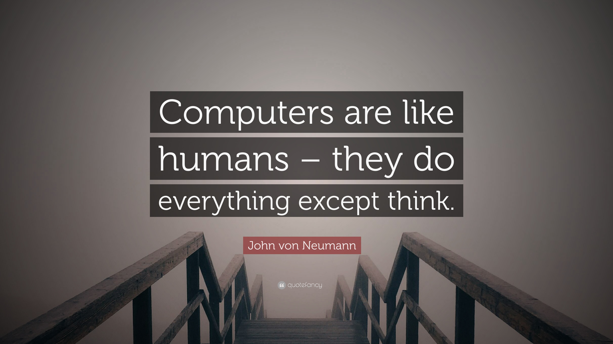

John Von Neumann's Influence on Computing
Von Neumann was a founding figure in computing. Von Neumann was the inventor, in 1945, of the merge sort algorithm, in which the first and second halves of an array are each sorted recursively and then merged. Von Neumann wrote the 23 pages long sorting program for the EDVAC in ink. On the first page, traces of the phrase "TOP SECRET", which was written in pencil and later erased, can still be seen. He also worked on the philosophy of artificial intelligence with Alan Turing when the latter visited Princeton in the 1930s.
Von Neumann's hydrogen bomb work was played out in the realm of computing, where he and Stanisław Ulam developed simulations on von Neumann's digital computers for the hydrodynamic computations. During this time he contributed to the development of the Monte Carlo method, which allowed solutions to complicated problems to be approximated using random numbers.
Von Neumann's algorithm for simulating a fair coin with a biased coin is used in the "software whitening" stage of some hardware random number generators. Because using lists of "truly" random numbers was extremely slow, von Neumann developed a form of making pseudorandom numbers, using the middle-square method. Though this method has been criticized as crude, von Neumann was aware of this: he justified it as being faster than any other method at his disposal, writing that "Anyone who considers arithmetical methods of producing random digits is, of course, in a state of sin."
A video showing how even now, all architectures for software are built off the fundamentals created by John Von Neumann